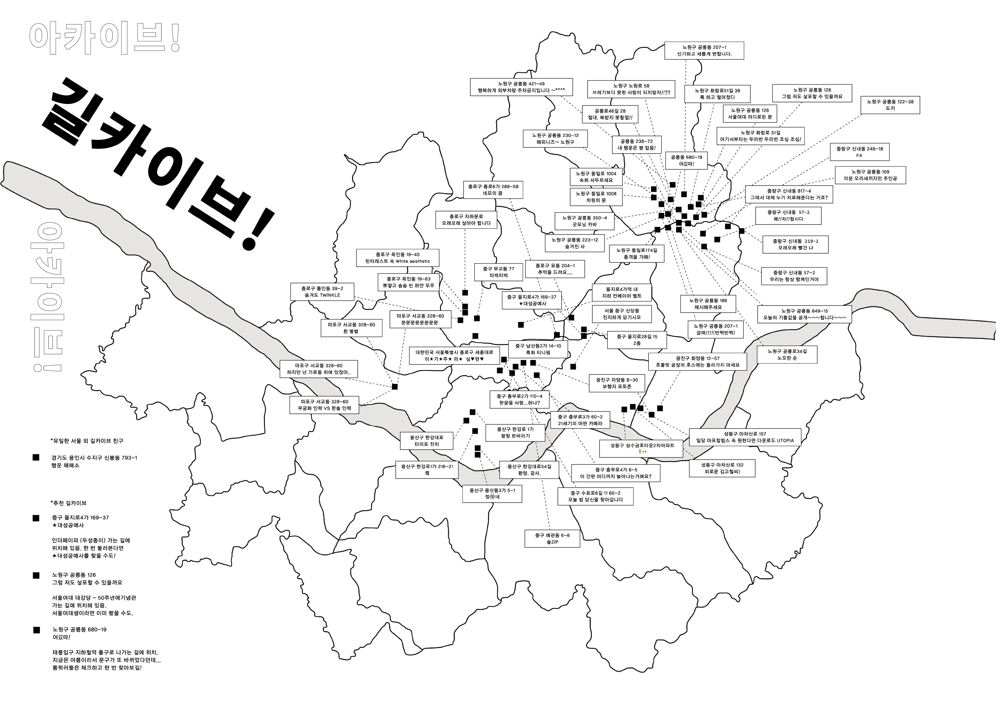
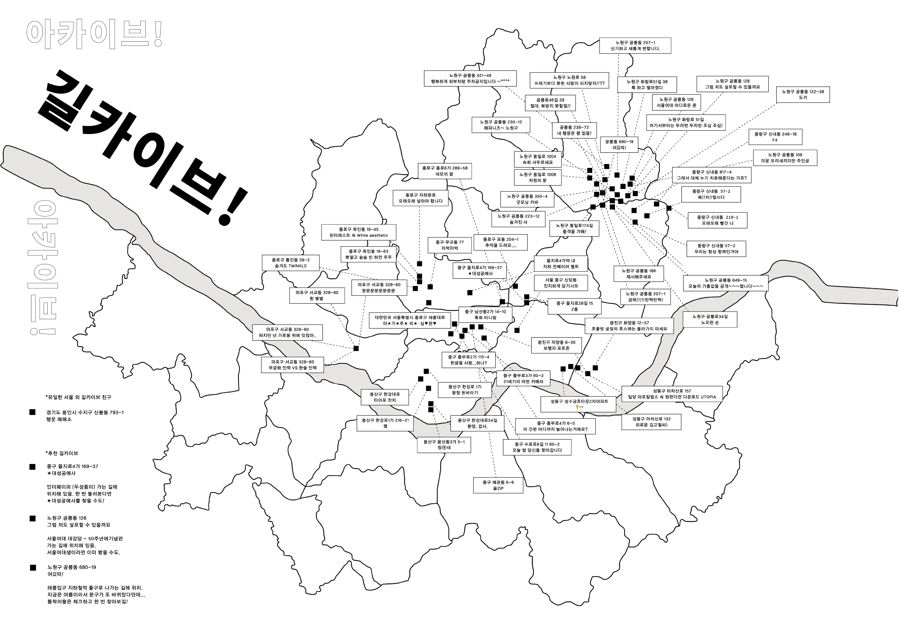
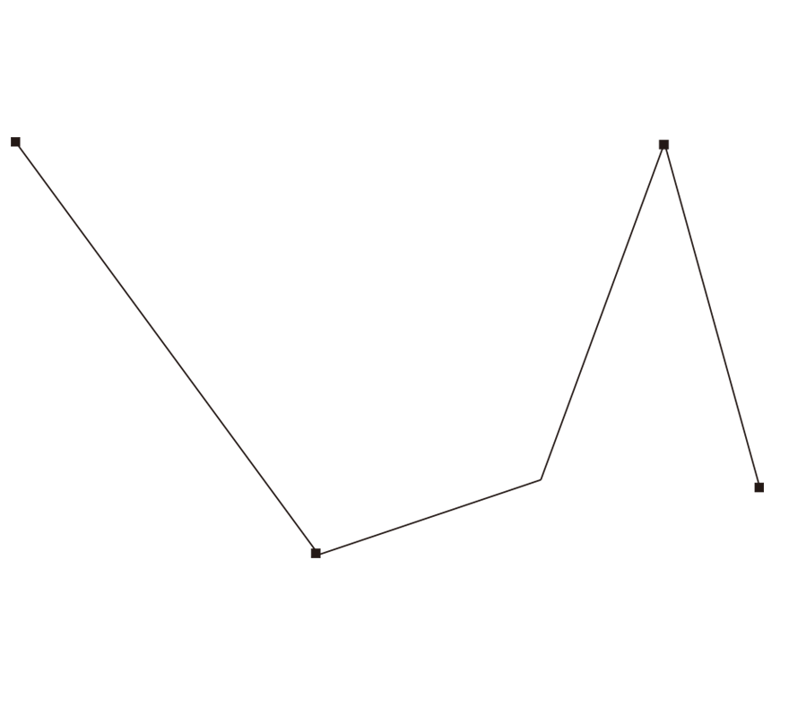
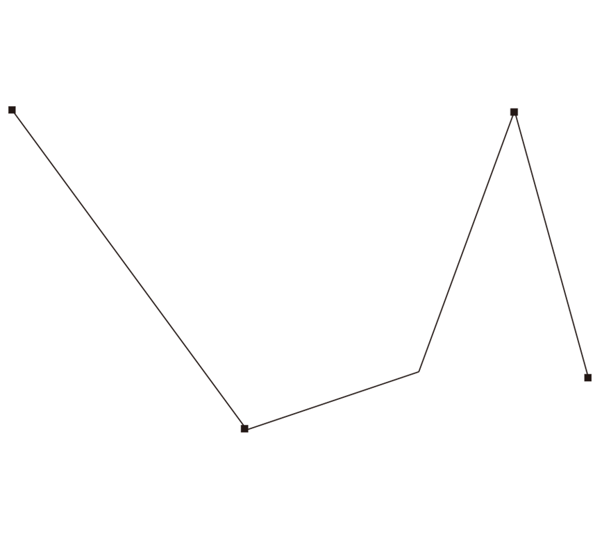

 

2024
[정류장 레터링 포스터]
2p, single sided printing
297 * 420 X 6
출판물 ‘아카이브! 길카이브! 아카이브!’를 위한 부록 디자인 작업입니다.
길을 돌아다니며 시선을 이끄는 길가 친구들을 아카이브한 출판물의 컨셉에 맞게
지도 부록을 작업했습니다. 지도에는 서울 지도와 아카이빙한
길가 친구들의 위치와 이름을 삽입하여 작업했습니다.
접지 지도 형태로 접어 출판물 뒤에 끼어두는 방식을 택해
출판물과 연결되는 부록의 형태를 만들었습니다.


map graphic
studio pics *ˊᵕˋ
used graphics¸¸♪